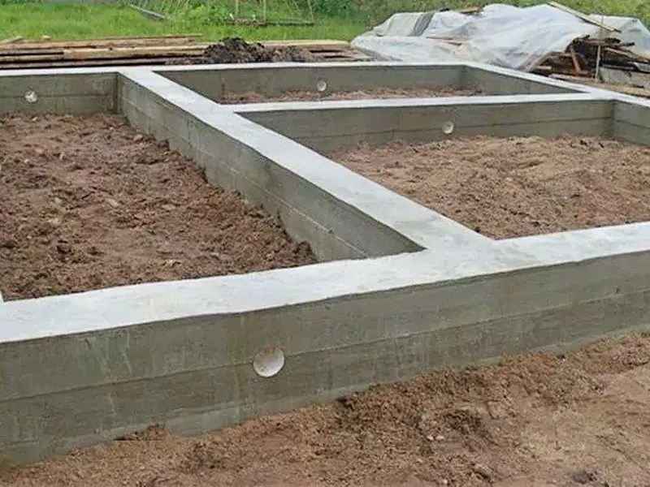
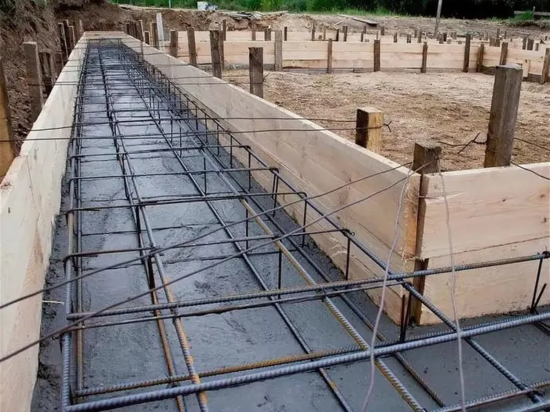
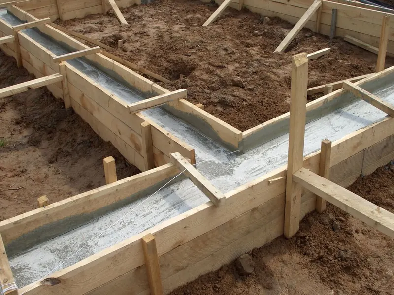
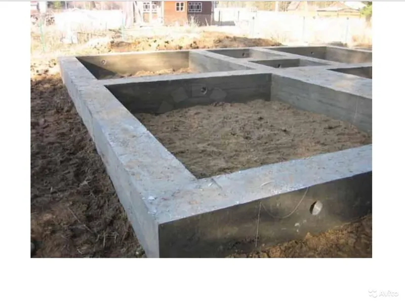

Ленточный фундамент для дома под ключ в Москве и МО
Железобетонная лента под всеми несущими стенами: проверенная технология для каменных домов, бань с бассейном и построек с подвалом. Расчёт, армирование и заливка — за 10–14 дней.

Что такое ленточный фундамент
Ленточный фундамент для дома — железобетонная лента под всеми несущими стенами. Она принимает вес постройки и передаёт его на плотные слои грунта, поэтому такой ленточный фундамент под дом из газоблока, керамоблока или кирпича — оптимальный выбор по цене и надёжности. Правильный ленточный фундамент служит 100+ лет и не требует обслуживания — при условии грамотного расчёта, дренажа и армирования.
Преимущества
Почему правильный ленточный фундамент служит 100+ лет
- 01
Держит тяжёлые стены
Керамоблок, газобетон, кирпич — лента рассчитана под вес каменных домов и перекрытий любого типа.
- 02
Подвал и цоколь
Заглублённая лента даёт полноценный подвал, гараж или технический этаж под всей площадью дома.
- 03
Ресурс 100+ лет
Монолитный железобетон в земле служит дольше, чем стоит сам дом, и не требует обслуживания.
- 04
Сложные планировки
Лента повторяет контур дома: внутренние несущие стены, эркеры, террасы — всё закладывается в схему.
- 05
Всесезонная заливка
Строим и зимой — очередь на бригады короче.
- 06
Предсказуемая цена
Стоимость известна после расчёта и фиксируется в договоре — не вырастет в процессе стройки.
Правильный ленточный фундамент — это три обязательных элемента: песчано-гравийная подушка с трамбовкой, двухрядный арматурный каркас и гидроизоляция. Пропуск любого из них превращает прочную ленту в источник трещин через два-три года. Поэтому мы прописываем каждый слой в проекте и контролируем его на объекте с фотоотчётом. Для домов с подвалом добавляем дренаж по периметру и утепление отмостки — это исключает сырость и силы морозного пучения.
Наши объекты
Ленточный фундамент на реальных стройках
Разметка, армирование и заливка — так выглядит правильный ленточный фундамент, сделанный нашей бригадой.



Как мы строим
Расчёт и заливка ленточного фундамента: этапы под ключ
Этап 1
Расчёт ленточного фундамента
Считаем нагрузку от стен и перекрытий, ширину ленты и марку бетона. Расчёт делаем по данным геологии участка — бесплатно.
Этап 2
Глубина ленточного фундамента
Мелкозаглублённая лента — 50–70 см, заглублённая — ниже глубины промерзания. Глубину определяем по типу грунта и весу дома.
Этап 3
Опалубка для ленточного фундамента
Собираем съёмную опалубку из щитов с точностью по лазеру и усиливаем раскосами — стена не «поплывёт» при заливке.
Этап 4
Армирование ленточного фундамента
Вяжем каркас из рифлёной арматуры 12–14 мм: два пояса с вертикальными связями. Каркас принимает растягивающие нагрузки.
Этап 5
Заливка ленточного фундамента
Бетон М300 заливаем слоями по 20 см с вибрированием — без пустот и холодных швов, за один день.
Этап 6
Гидроизоляция и сдача
Гидроизолируем ленту, подписываем акт. Гарантия 5 лет по договору.
Важно понимать: на пучинистых грунтах обязательны песчаная подушка, дренаж и утепление отмостки — иначе ленту выдавит силой морозного пучения. Бетонные работы ведём по СП 70.13330.2012 (несущие и ограждающие конструкции, включая работы при отрицательных температурах). Всё это проектируем заранее, после анализа грунта на участке.
Рассчитать фундамент под проектВопросы и ответы
Частые вопросы о ленточном фундаменте под дом
Какой должна быть глубина ленточного фундамента?
Для лёгких домов на плотных грунтах — 50–70 см, для тяжёлых каменных — 140–180 см, ниже промерзания. Точную глубину считаем по геологии участка.
Что лучше: ленточный фундамент или монолитная плита?
Зависит от грунта и задач. Плита выигрывает на слабых и водонасыщенных грунтах, лента — когда нужен подвал и грунты плотные. По бюджету лента обычно доступнее плиты той же площади.
Что такое свайно-ленточный фундамент и когда он нужен?
Сваи опираются на плотные слои, а лента связывает их в единое основание. Свайно-ленточный фундамент выбирают для рельефных участков и торфяников.
Почему заливка ленточного фундамента должна идти за один день?
Стык слоёв, залитых в разные дни, — слабое место: бетон не сцепляется и появляется холодный шов. Поэтому заливаем ленту за один день миксерами с вибрированием каждого слоя — основание монолитно по всей длине.
Сколько стоит заливка ленточного фундамента под ключ?
Цена зависит от периметра, сечения ленты и объёма земляных работ. Расчёт ленточного фундамента делаем бесплатно по данным участка, итоговая стоимость фиксируется в договоре.